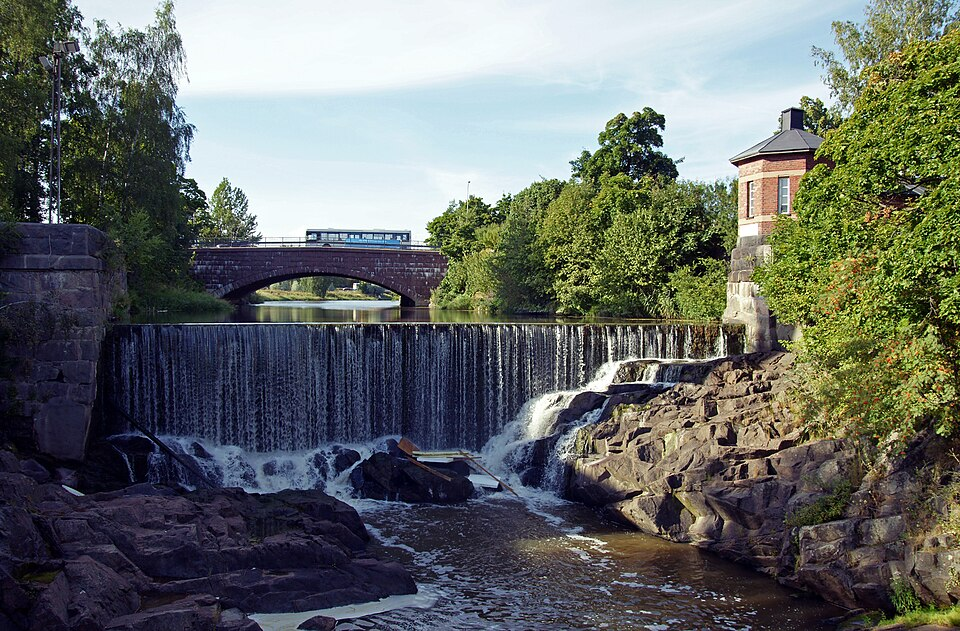
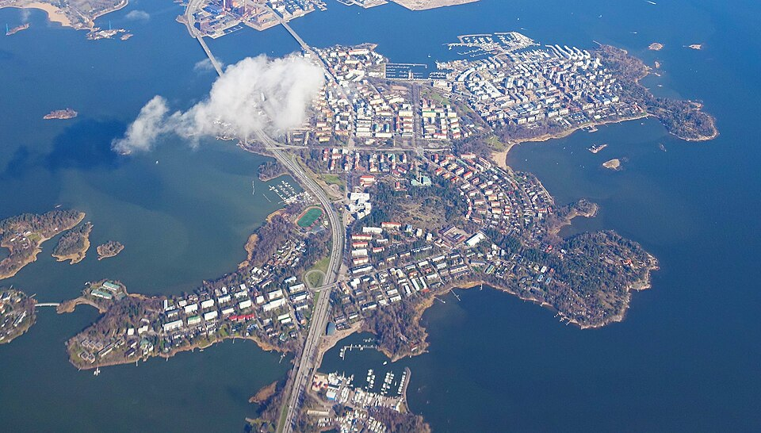
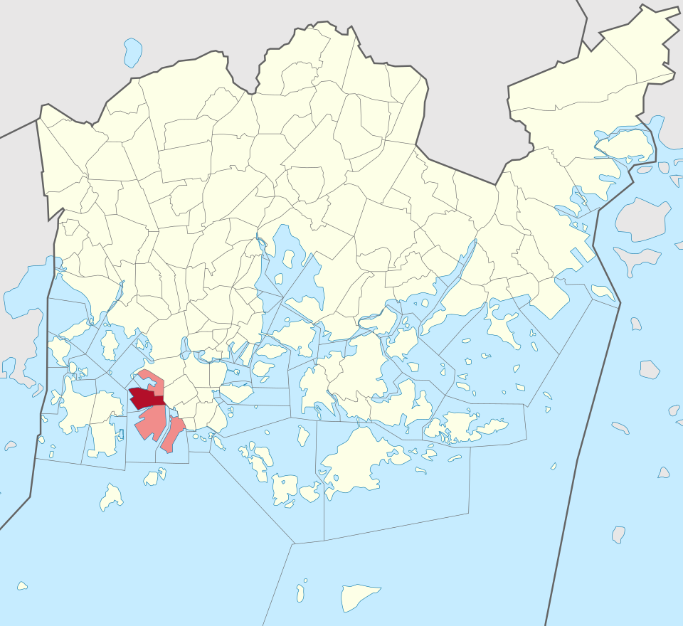
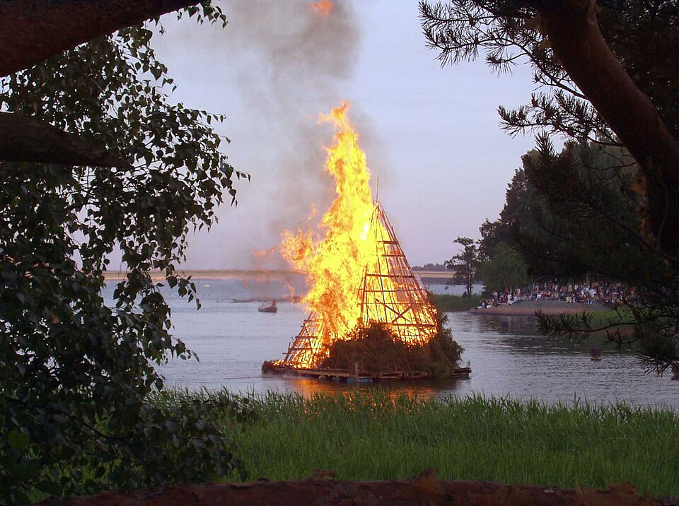
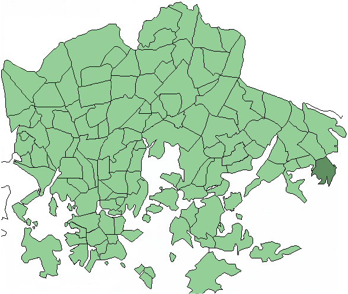

📍 Visual Gallery: Top Helsinki Urban Spots Accessible by Public Transit
Helsinki offers unmatched urban sea and river angling right off the tram, bus, and metro. Explore the physical terrain of each prime location below:

Vanhankaupunginkoski
Bus 55, 71, 78, 506 to Tekniikan museo
Upper: Rapid Permit
Lower: Fisheries Fee
The historic mouth of Vantaanjoki. Wooden walkways overlook the calm tidal pool (*suvanto*) where zander, perch, and sea trout gather. The upper rapids offer fly fishing for salmonids.

Lauttasaari Bridge & Shores
Metro Lauttasaari or Bus 21 / 22
Herring: Free
Trout: Coastal Lure
The Lauttasaari bridge is the epicenter of the spring Baltic herring spectacle. The rocky southern shores (Särkiniemi) are famous for autumn sea trout spinning into the surf.

Ruoholahti Canal & Jätkäsaari
Metro Ruoholahti / Tram 8, 9
Urban Street Fishing
Perch & Zander
Lit concrete quay walls ideal for after-work urban street fishing. Dropshot and small softbaits along the canal edges consistently yield fat autumn perch and keeper zander.

Seurasaari & Meilahti Headlands
Bus 24 to Seurasaari bridge
Pike & Perch
Sea Trout
Granite headlands facing the open sea. Cast medium Kuusamo spoons for pike around the drop-offs, or fish the sheltered reed bays for heavy spring pike.

Uutela & Kallahdenniemi
Metro Vuosaari + Bus 560
Spring Whitefish
Wild Pine Shore
Kallahdenniemi's shallow sandbars are the premier venue for spring bottom angling (*siianonginta*). Uutela's rocky bluffs jut into the Gulf of Finland for sea trout.
🌲 Greater Uusimaa & Across Finland
- Vantaanjoki Rapids (Pitkäkoski & Ruutinkoski): Located in pristine forest between Helsinki and Vantaa. Trout and grayling fly fishing.
- Espoonlahti (Espoo Bay): Reed-fringed brackish bay holding giant zander and autumn pike.
- Lake Saimaa (Saimaa): 14,000 islands of pristine freshwater holding landlocked salmonids, zander, and giant pike.